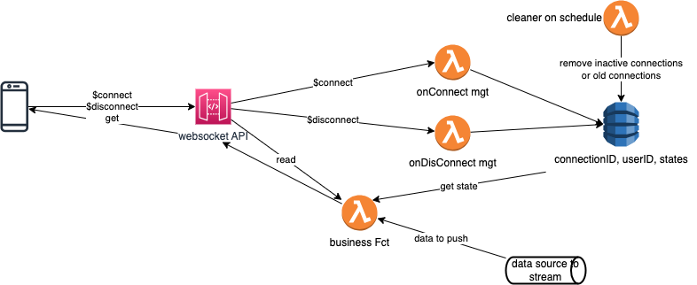

Websocket connection with client app and Lambda backend¶
The client can be a mobile app with a push mechanism to get data from backend feed to the app, or a chat bot to maintain a connection with the bot backend and the client app.
Architecture¶
The architecture uses a set of Lambda and API Gateway with SebScoket protocol. The SAM extract looks like
Websocket:
Type: AWS::ApiGatewayV2::Api
Properties:
Name: SessionManagementWebsocketApi
ProtocolType: WEBSOCKET
RouteSelectionExpression: "$request.body.action"
The client app, creates a unique id, and establishes a connection to the API gateway with $connect which routes to a Lambda, as declared in this SAM section:
ConnectRoute:
Type: AWS::ApiGatewayV2::Route
Properties:
ApiId: !Ref Websocket
RouteKey: $connect
AuthorizationType: NONE
OperationName: ConnectRoute
Target: !Join [ '/', ['integrations', !Ref ConnectInteg] ]
ConnectInteg:
Type: AWS::ApiGatewayV2::Integration
Properties:
ApiId: !Ref Websocket
Description: Connect Integration
IntegrationType: AWS_PROXY
IntegrationUri: !Sub arn:aws:apigateway:${AWS::Region}:lambda:path/2015-03-31/functions/${OnConnectFunction.Arn}/invocations
The unique ID is kept in the session browser data store.

The unique ID is added to the Sec-WebSocket-Protocol header. Another way to pass the unique ID to the backend could be a query string parameter. Keep the Sec-WebSocket-Protocol in the backend response:
{
'statusCode': 200,
'headers': {
'Sec-WebSocket-Protocol': userId
}
}
If using authentication with Oauth service, the ID comes from a JWT token or other form of authentication and uses it instead of a randomly generated unique ID.
In API Gateway, the WebSocket APIs are routes integrated with HTTP backend, Lambda or other supporting services. The connection is bi-directional. The WebSocket API generates the connection ID automatically.
Client app sends a WebSocket upgrade request. If the request succeeds, the $connect route is executed while the connection is being established. Authorization should be done in the $connect. Use $connect when we need to be aware of the client app, and be able to send messages from backend. When we need to maintain connection information with the different connected client apps, then a connection ID is used and an external database need to keep information of the connection ID, user id, and may the state of the communication. The primary key is the user id, this helps locate users faster as they reconnect.
ddb.put_item(
TableName=table_name,
Item={
'userId': {'S': userId},
'connectionId': {'S': connection_id},
'domainName': {'S': domain_name},
'stage': {'S': stage},
'lastSeen' : {'N': last_seen},
'active': {'S': True}
}
)
Using the put_item function, we don’t need to query the DB if the user already exists. If it is a new user, Put creates a new item. Use a global secondary index in DynamoDB to locate the connection ID, to mark the connection inactive when WebSocket API calls OnDisconnect.
See the SAM template declaration for the DynamoDB tables, keys and global indexes
ConnectionsTable:
Type: AWS::DynamoDB::Table
Properties:
AttributeDefinitions:
- AttributeName: "userId"
AttributeType: "S"
- AttributeName: "connectionId"
AttributeType: "S"
- AttributeName: "active"
AttributeType: "S"
- AttributeName: "lastSeen"
AttributeType: "N"
KeySchema:
- AttributeName: "userId"
KeyType: "HASH"
GlobalSecondaryIndexes:
- IndexName: connectionId-index
Projection:
ProjectionType: ALL
ProvisionedThroughput:
WriteCapacityUnits: 5
ReadCapacityUnits: 5
KeySchema:
- KeyType: HASH
AttributeName: connectionId
- IndexName: lastSeen-index
Projection:
ProjectionType: KEYS_ONLY
ProvisionedThroughput:
WriteCapacityUnits: 5
ReadCapacityUnits: 5
KeySchema:
- KeyType: HASH
AttributeName: active
- KeyType: RANGE
AttributeName: lastSeen
ProvisionedThroughput:
ReadCapacityUnits: 5
WriteCapacityUnits: 5
SSESpecification:
SSEEnabled: True
SessionsTable:
Type: AWS::DynamoDB::Table
Properties:
AttributeDefinitions:
- AttributeName: "userId"
AttributeType: "S"
KeySchema:
- AttributeName: "userId"
KeyType: "HASH"
ProvisionedThroughput:
ReadCapacityUnits: 5
WriteCapacityUnits: 5
SSESpecification:
SSEEnabled: True
Once the record in a table, the application has connection management, and can retrieve session data. The business function, is specific to each business application, but will need to search for the connection ID, using the DynamoDB index and get the state of the connection.
def get_user_id(connection_id):
response = ddb.query(
TableName=connections_table_name,
IndexName='connectionId-index',
KeyConditionExpression='connectionId = :c',
ExpressionAttributeValues={
':c': {'S': connection_id}
}
)
items = response['Items']
if len(items) == 1:
return items[0]['userId']['S']
return None
Another table could be added to maintain the state of the session. For example if the source of the messages to send back to a client comes from Kafka, it can be the last commited offset, or if messages are coming from a FIFO SQS Queue, it can be a time stamp of the last pushed message, or the last message itself. The code to push to the websocket looks like this:
try:
api_client.post_to_connection(
ConnectionId=connection_id,
Data=bytes(message_to_send, 'utf-8')
)
except api_client.exceptions.GoneException as e:
print(f"Found stale connection, persisting state")
store_cursor_position(user_id, position_in_data_source)
return {
'statusCode': 410
}
In chat bot a snapshot of the conversation needs to be set up and persisted.
The $disconnect route is executed after the connection is closed. The active attribute in the connection table is set to false. Session record may be kept.
The delete function is run every x minutes and look at potential non-active connection or connection too old (user did not reconnect). Or use the onDelete WebSocket verb to route to a lambda doing the cleaning in connection and session tables based on the unique ID.
When using DynamoDB, it provides a built-in mechanism for expiring items called Time to Live (TTL)